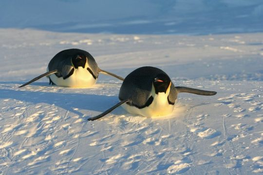

Penguins are aquatic flightless birds which can be found primarily in the Southern Hemisphere. Penguins are primarily suited to dwell in cold climates, but there are numerous species that live in warmer climates. Unlike most birds, penguins don't have wings. They instead have flippers, which allow them to swim in water, where they collect most of the prey. Penguins are also able to move around by sliding on ice and snow. Penguins primarily consume fish, squid, and krill. Because penguins are typically not prey to any land predators, they do not exhibit a fear of humans because they do not view humans as a threat.
